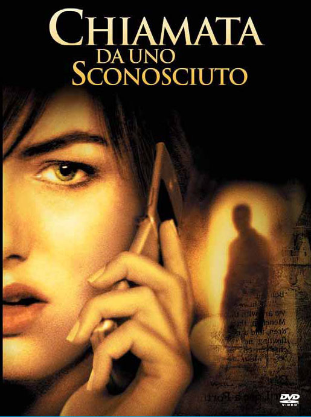
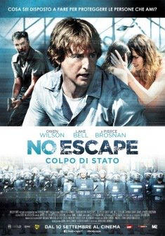
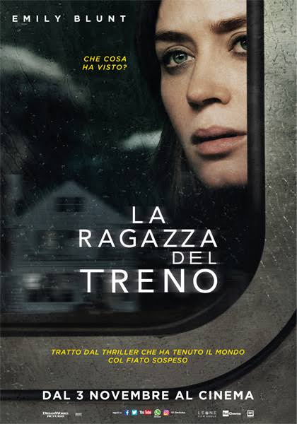
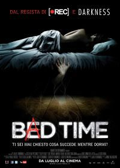
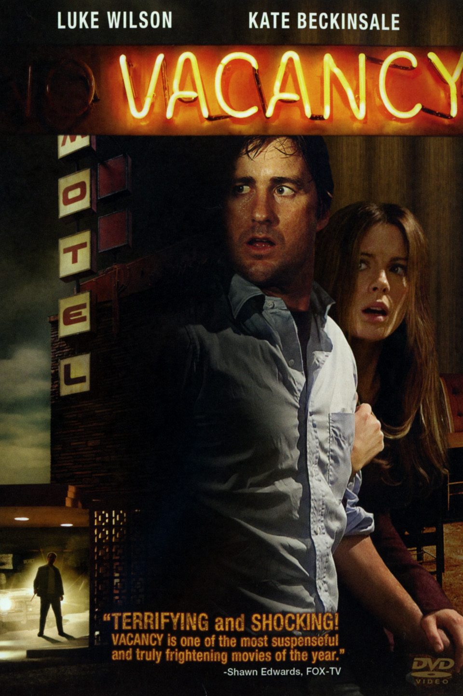

Uno dei classici dei film thriller degli ultimi 20 anni. Gli elementi sono semplici, probabilmente anche banali, ma prima di questo non c'era
mai stato un film così. Una chiamata anonima, una ragazza rimasta sola a fare la babysitter. Tutto il resto vien da sè. Iniziano rumori strani,
lo psicopatico è dentro o fuori? Tensione continua, ogni volta che il telefono squilla o che la musica si fa incalzante cercherete di prepararvi
psicologicamente a uno spavento. Thriller che gioca su un tema molto realistico. Anche la protagonista recita molto bene la parte della ragazza
terrorizzata. Lo definirei un thriller in tutto e per tutto, uno dei più classici. Verdetto per questo film?
GUARDO

A metà tra un film d'azione e un thriller, può benissimo essere inserito in quest'ultima categoria. Perchè se il compito di un thriller è tenere
lo spettatore col fiato sospeso durante il film, "Colpo di stato" ci riesce fino all'ultima scena. Fin dalle prime scene sarete avvolti e colpiti da questo
senso di ansia che il film, anche grazie alle numerose scene di azione presenti, trasmette. Un Owen Wilson in una veste più seria dei personaggi a cui ci ha
abituato di solito, ma il suo talento recitativo non si può discutere, credibile al 100%. Film assolutamente realistico e questo rende il tutto ancor più coinvolgente. Effetti speciali non dei migliori, ma sufficienti. Buona la fotografia.
Inquadrature particolari che rendono il film diverso da tanti altri, grazie alla regia oltre che all'argomento trattato. Verdetto per questo film?
GUARDO

Un thriller con una storia molto intrigante, ma all'inizio molto frammentata. Inizierete a guardarlo senza capirci nulla, poi pian piano i
pezzi si ricomporranno sotto i vostri occhi proprio come quelli di un puzzle. Le storie delle diverse persone si intrecceranno creando un
filo conduttore che non pensavate neanche potesse esistere. Tutto parte da una ragazza su un treno che un giorno vede accadere qualcosa di diverso
dal solito nel panorama che è sempre solita guardare dal finestrino. Da lì in poi vi avvolgerà una storia pazzesca, ricca di colpi di scena e intrighi,
fino ad arrivare allo sprint finale in cui ogni pezzo sarà al suo posto... Se siete amanti dei film complicati che rivelano
tutto nel momento finale, questo è film che fa per voi. Verdetto per questo film?
GUARDO

Thriller spagnolo sorprendentemente piacevole. La storia di un portiere di casa psicopatico è interessante. Un uomo che
praticamente vede ogni giorno la protagonista ed è ossessionato da lei. Questa ossessione lo porterà a compiere azioni inquietanti
e estreme. Il titolo del film è dovuto al fatto che l'uomo si introduce ogni notte nella casa della donna (avendo la chiave di tutti gli appartamenti).
La situazione però dovrà prima o poi degenerare. Il film trasmette un senso di disagio dovuto anche all'attore che interpeta il portiere. Guardando
questo film rifletterai su quanto la tua privacy possa essere a rischio se qualcuno ha le chiavi di casa tua, anche se è una persona che vedi ogni giorno.
Buona anche la fotografia. Verdetto per questo film?
GUARDO

A mio parere un classico senza tempo. Un film così macabro e inquietante da portarvelo addosso per molto tempo. Una coppia si ferma in un motel
isolato in piena notte. Una volta ricevuta la camera fanno una scoperta sconcertante: i film trasmessi nella tv della loro stanza mostrano
gente uccisa in quella stessa camera brutalmente. In pratica è un mattatoio allestito come un motel dal proprietario, che registra questi video
e poi li vende. Inizia l'incubo della coppia che dovrà cercare in tutti i modi di salvarsi dalla banda di psicopatici che gestisce l'hotel. Ansia
costante e tensione assicurata. Tanti gli spaventi. Insomma, tutti elementi perfetti per un perfetto thriller. I protagonisti recitano molto bene
e il proprietario dell'hotel gioca un ruolo fondamentale nell'incutere terrore allo spettatore, grazie anche ai suoi scagnozzi mascherati e armati
di coltello. Verdetto per questo film?
GUARDO